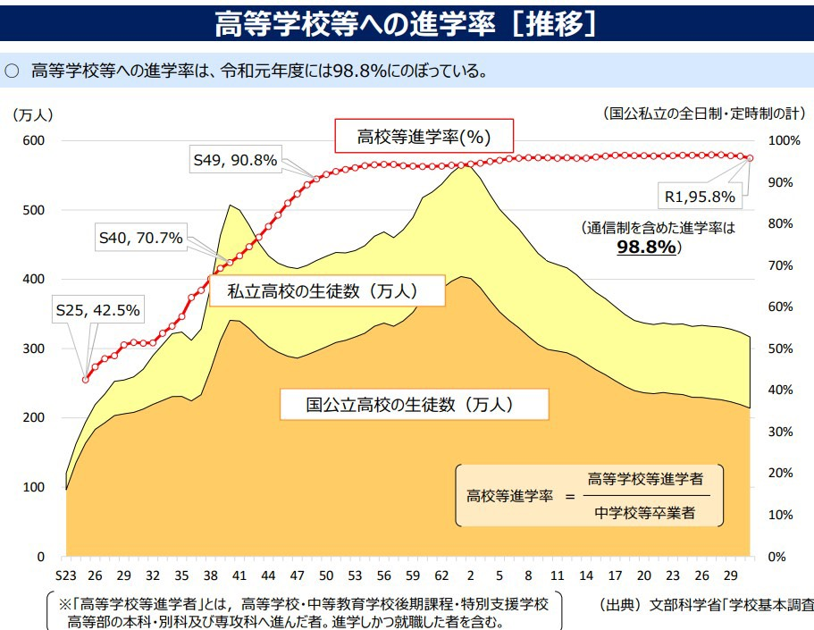
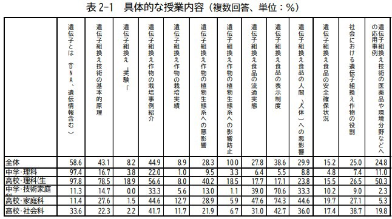
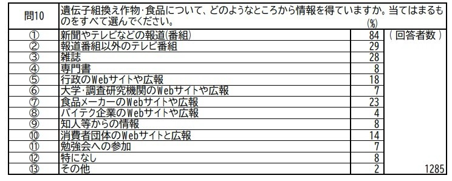

遺伝子組み換え食品についてより多くの国民に知ってもらうためには、遺伝子組み換えに関することを高校生までに授業で学ばせることが重要です。

文部科学省によると、高等学校等への進学率は近年上昇しており、2012年で96.5%だと分かっています。つまり、高校生までに遺伝子組み換えについての情報を学ばせることができれば、高校生までに9割以上の人がそれらの情報を得るということになります。

また、内閣府によると、中学・高校の理科、家庭科の授業で「遺伝子とは」と「遺伝子組み換え技術の基本的原理」について取り扱っている学校はそれぞれ58.6%、43.1%だが、「遺伝子組み換え食品の人間への悪影響」と「遺伝子組み換え食品の安全確保状況」について取り扱っているのは、それぞれ29.9%、15.2%だと読み取れます。この現状を踏まえ、遺伝子組み換えに関する授業を高校までに学ばせる際は、特に遺伝子組み換えの食品の安全性や影響についての授業をより詳しく行う必要があります。この高校までに遺伝子組み換えの授業を学ばせるという政策を行うことによって、学校で学んだ世代の人々が成長していくにつれ、遺伝子組み換えについての情報を理解している国民が増えていくと考えられます。
また、新聞やテレビなどで遺伝子組み換えについての情報を報道することも遺伝子組み換えについて国民が知るためには重要です。

農林水産省によると、満20歳以上の国民の84%が遺伝子組み換え作物・食品についての情報を、新聞やテレビの報道などから得ていて、29%の人が、報道番組以外のテレビ番組で情報を入手していると読み取れます。現状で述べたように、国民は、「どの遺伝子組み換え作物が日本で流通しているか」についてや、「日本で遺伝子組み換え作物が農家で栽培されているかどうか」についての情報を誤って認識している傾向にあるため、これらの情報を優先的に報道することでより国民の理解が広まると考えられます。これらのことから、新聞やテレビなど人々が普段目にする媒体で遺伝子組み換えの情報を発信することが、より多くの国民が遺伝子組み換えについての情報を知ることにつながるといえると言っていいでしょう。
以上述べてきた内容からＧＭ作物使用にはメリットが存在するものの、生態リスクという不都合の起こる可能性が含まれていることが分かった。本章では日本はどのようにＧＭ作物を扱えばよいのかを考える。食糧自給率の低い日本は食糧確保に関して主に米国に頼っているが、その米国は生産効率向上のために農薬やＧＭ作物作成に積極的に着手している。つまり、米国ではその農薬やＧＭ作物と共に進化してきた病害生物や農業経済が存在する。そのため米国がＧＭ作物や農薬の使用をやめることは現実的でない。つまり、米国と貿易をしている日本が、以上で述べてきたようなＧＭ作物が持つ生態リスクに対して対策を講じる必要がある。[12]によると現在使用している農薬やＧＭ作物は米国産であることがほとんどであるが、前述したように米国のほうが農業科学も病害生物も進化しているため日本には不適であるという。加えて、[12]は現農業科学はすでに現農家が取り扱いを判断できるレベルではないと述べており、このことから農家自体の農業科学についての教育や専門家の必要性があると考察できる。
・コメントを残す
メールアドレス（必須）
コメント（必須）
※必須項目は必ずご入力ください